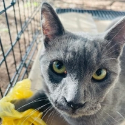
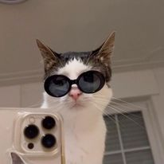
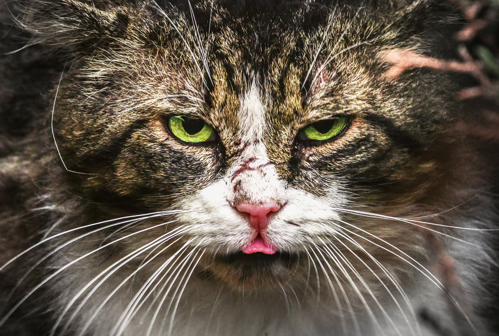

×


Página acerca del proyecto "Cat & Family" relacionado a los gatos del Centro de Estudios Científicos y Tecnológicos de Aguascalientes Cd Satélite Morelos.
El objetivo es dar en adopcion a los gatos no solo para brindarles una mejor calidad de vida, sino para que ya no estén en la escuela, ya que en la escuela no hay buenas condiciones de vida para ellos.
Este proyecto consiste en crear jaulas para atrapar a los gatos, esterilizarlos, vacunarlos, darlos en adopción y darles un seguimiento para comprobar que los gatos reciben una buena calidad de vida.
Crear jaulas para poder atrapar a los gatos y así vacunarlos, esterilizarlos, bañarlos y limpiarlos para que puedan estar en condiciones de adopción.
Al esterilizar a un gato quirúrgicamente lo que se hace es una vasectomía si es macho, o una ligadura de trompas en el caso de las hembras; mientras que la castración se basa en la extirpación de sus órganos sexuales. Esto significa que el evitará embarazos no planeados y estará protegido de algunas enfermedades.
Al adoptar un gato no sólo le das una oportunidad para vivir una vida digna con cuidados y amor; además, estás salvando su vida, ya que, muchos de los animales que se encuentran en situación vulnerable, que no encuentran casa, son condenados a vivir en el abandono.
Lo más importante es que des seguimiento a la adopción, para estar informado de la bienestar del gato. Una vez elegido al adoptante que cumpla con todas tus expectativas, debes comunicarte con él (vía telefónica), para entrevistarlo y corroborar sus respuestas.
Son independientes: Esto es ideal para aquellas personas que acostumbran a viajar, puesto que no requieren de mucha atención.
No suelen hacer mucho ruido: Son mascotas que evitan hacer demasiada bulla. Aunque muy pocas veces, sus gritos son bastantes fuertes, esto suele pasar cuando necesitan algo o están en celo.
Ayudan para la salud: Existen varios estudios que afirman que tener un gato en casa te ayudan a relajarte y reducir el estrés. Además, el ronroneo que producen los gatos ayudan para estimular los tejidos y reducir el dolor.
Gato Domestico: Son cariñosos a la par e independientes, no requieren mucha atencion como el perro. Cuidan más su higiene por si solos. Sus características los convierten en opcion perfecta para personas con menos tiempo.

Gato Callejero: Puede caminar o moverse como un gato de casa, tal como caminar con la cola levantada, en señal amigable.
Gato Feral o Salvaje: No son muy confiables, ya que sus garras y sus colmillos son extremadamente filosos. Comen pequeños roedores como ratones, ratas, liebres y conejos, y obtienen su comida por si solos.
A) Todo animal perteneciente a una especie salvaje, tiene derecho a vivir en libertad en su propio ambiente natural terrestre, aéreo o acuático y a reproducirse.
B) Toda privación de libertad, incluso aquella que tenga fines educativos, es contraria a este derecho.
Atención veterinaria: Lo primero que debes hacer cuando rescates a un gato es buscar o acudir a un veterinario de confianza para que le haga su valoración general de salud.
Promoción: Ya que esté listo, sigue el promocionarlo por diversos medios. Te recomendamos hacer un cartel con fotografía que impulse a quien lo vea a querer adoptar a un gato.
Elegir al candidato perfecto: Debes aegurarte de que la persona que va a adoptar sea la indicada, y no alguien que no va a cuidar correctamente del animal.

La adopción: ¡Llegamos al punto feliz! La adopción siempre se debe realizar llevando al animal al domicilio del nuevo dueño.